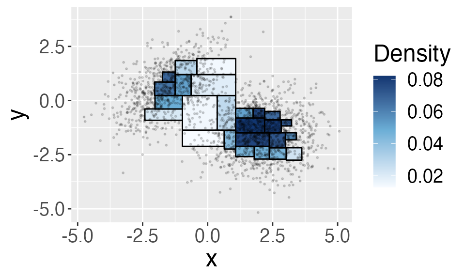
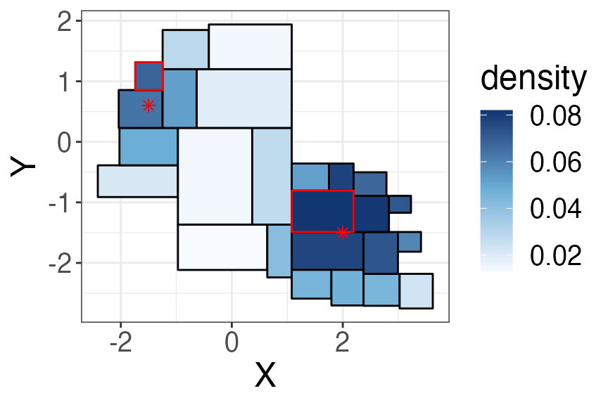

Mode Hunting Using Beta Trees
mode.RmdIn this vignette, we will demonstrate how to use a Beta Tree histogram to identify modes in a continuous probability distribution.
The mode of a continuous probability distribution is a local maxima of the probability density. For example, the following plot shows the density contours of a mixture of 2-dim Gaussian and the asterisks indicate the two modes of the distribution function. We are often interested to identify modes in a distribution because they indicate sub-populations (here, the two modes indicate the two mixture components).

For a histogram, we can think of a mode as a region whose average density is higher compared to its neighbors. To put another way, suppose two regions \(R_1\) and \(R_2\) are distinct modes, then along any path connecting \(R_1\) and \(R_2\) there exists at least one region \(R\) whose average density is lower than both \(R_1\) and \(R_2\).
Example: Detecting modes in a mixture of 2-dim Gaussian
In this example, we simulate \(n=\) 2000 obs. from a 2-dim Gaussian mixture we showed before
\[ \frac{2}{5} {N}\left(\left(\begin{matrix}-1.5 \\0.6\end{matrix}\right),\left(\begin{matrix}1 & 0.5 \\ 0.5 & 1\end{matrix}\right) \right) + \frac{3}{5} {N}\left(\left(\begin{matrix}2 \\-1.5\end{matrix}\right),\left(\begin{matrix}1 & 0 \\ 0 & 1\end{matrix}\right) \right), \]
We will start by creating a Beta tree histogram. Here, we set the
confidence level alpha = 0.1 and use weighted bonferroni
method for multiple testing correction. The densities are higher in the
upper left and the lower right regions, suggesting there are two modes
in the distribution.
hist <- BuildHist(X, alpha = 0.1, method = "weighted_bonferroni", plot= T)
We use the find_mode() function to identify modes in a
Beta trees histogram. This function has three parameters, the first is
the Beta tree histogram (output of the BuildHist function),
the second is the data dimension d, and the third is the
cutoff value of the path length (we only check paths whose length is at
most cutoff). We set cutoff=1000 here, which
means we will look at every path between two regions. However, it might
be infeasible to check every path because of computation constraint, so
typically we would set a smaller cutoff, e.g.,
cutoff = 6.
modes <- FindModes(hist = hist, d = d, cutoff = 1000)FindModes function returns a list with three components:
mode returns the index of the modes, hist
returns the input histogram, and g returns the adjacency
graph of regions in the histogram.
modes$mode # which regions are the modes?## [1] 20 8
hist[modes$mode, 1:4] # lower and upper bounds of the two modes## [,1] [,2] [,3] [,4]
## [1,] 1.079403 -1.4891923 2.193951 -0.8053697
## [2,] -1.738694 0.8557582 -1.246862 1.3160574We highlight the two modes in the histogram, and the asterisks are the two true modes. The two modes in the Beta trees histogram are close to the actual modes in the distribution.

In the next section, we describe details of FindModes
function.
Identifying modes of a Beta tree histogram
Let’s rephrase the question of mode detection as the following: how can we tell that the two regions highlighted in red (let’s call them \(R_1\) and \(R_2\)) are two distinct modes? (If we know how to do this, then we can detect mdoes by iterating through all the regions , compare each one with current modes, and declare it a mode if it is distinct from all the current modes.) Suppose that \(R_1\) and \(R_2\) are distinct modes, then along every path that connects \(R_1\) and \(R_2\), there should exist at least one region \(R\) whose average density is lower than both \(R_1\) and \(R_2\). Because the Beta tree histogram returns CI for the average density, we compare the lower and upper bound of the CI, that is, there should exist a region \(R\) such that
\[ \mathrm{CI}_\mathrm{up}(R) < \min(\mathrm{CI}_\mathrm{low}(R_1), \mathrm{CI}_\mathrm{up}(R_2)), \] where \([\mathrm{CI}_\mathrm{low}(R), \mathrm{CI}_\mathrm{up}(R)]\) is the confidence interval of the average density of \(R\).
For example, we plot the confidence interval for every region along the shortest path \(R_1\) and \(R_2\). As we can see, the upper confidence bound of the third region is below the lower endpoints of both modes. Suppose this is true for every path, then we declare \(R_1\) and \(R_2\) are two distinct modes.
Note that we have only examined one path here, and to check every
path, we use the function is_connected(). It returns
connected if the two regions are not
distinct modes. The function has five input values: i and
j are the indices of the two regions, g is a
graph based on the adjacency matrix (we will describe later),
ci are the lower and upper confidence bounds, and
cutoff specifies the maximum length of path the function
checks.
BetaTrees::is_connected(i = modes$mode[1], j = modes$mode[2], g = g, ci = hist[,6:7], cutoff = 6)## [1] "unconnected"We need the adjacency matrix in order to compute the path between two
regions. The function compute_adjacency_mat() computes the
adjacency matrix for all of the regions in the histogram. The two inputs
of the function is a Beta tree histogram hist and data
dimension d. In the output adjacency matrix \(A\), \(A_{i,j} =
1\) if \(i\)-th and \(j\)-th regions are neighbors and 0
otherwise. We say that \(R_1\) and
\(R_2\) are neighbors if \[
[x^{\mathrm{low}}_{1,j}, x^{\mathrm{up}}_{1,j}] \cap
[x^{\mathrm{low}}_{2,j}, x^{\mathrm{up}}_{2,j}] \neq \emptyset,\quad
\forall j=1,\ldots, d.
\] Here, we represent each region by the lower and upper bound in
each coordinate, i.e., \(R_1\) can be
represented as \([x^{\mathrm{low}}_{1,1},
x^{\mathrm{up}}_{1,1}]\times \ldots \times [x^{\mathrm{low}}_{1,d},
x^{\mathrm{up}}_{1,d}]\).
adj <- compute_adjacency_mat(hist = hist, d = d)
adj[1:5, 1:5] ## [,1] [,2] [,3] [,4] [,5]
## [1,] 0 1 0 0 1
## [2,] 1 0 0 0 1
## [3,] 0 0 0 1 1
## [4,] 0 0 1 0 0
## [5,] 1 1 1 0 0From the adjacency matrix, we compute a undirected graph
g (using function graph_from_adjacency_matrix
from igraph package).
g <- igraph::graph_from_adjacency_matrix(adj, mode = "undirected")To summarize, FindModes proceeds in the following
steps:
Order regions by the empirical density (in descending order). Initiate the list of modes by the region with the highest density.
Iterate through every region by order in (1), test if it is distinct modes from the current list of modes using
is_connectedfunction. If it isunconnectedfrom all the current modes, then we add it to the list of modes.Return the list of modes.